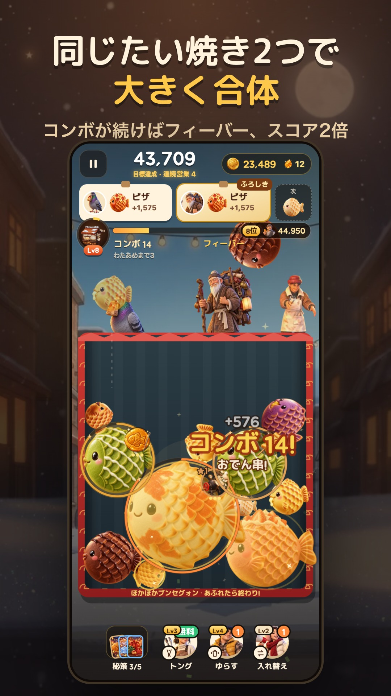

たい焼き合体パズル · お店の成長
ふたつのたい焼きから、
もっと大きな楽しさへ。
たい焼きを落として、同じもの同士を合体。コンボをつなぎながら、小さなお店を育てていくスマホパズルゲームです。
無料ダウンロード · 任意の広告とアプリ内購入

落として、合体
落とす場所を選んで、同じたい焼き同士を合わせると、もっと大きなたい焼きになります。
コンボをつなごう
連続で合体してコンボを重ね、フィーバータイムを楽しみましょう。
小さなお店を育てよう
プレイで獲得した通貨を使ってお店を成長させ、さまざまな収集要素を楽しめます。
Bungsegwon: Taiyaki Mergeとは？
Bungsegwon: Taiyaki Mergeは、Portable Nutrition Co., Ltd.が開発したスマホ向けパズルゲームです。同じたい焼きを合わせるパズルに、お店の成長と収集要素を組み合わせています。AndroidとiPhoneで遊べます。
よくある質問
どうやって遊びますか？
たい焼きを落とす位置を選び、同じ種類のふたつが触れるように置きます。大きなたい焼きを作りながらスコアとコンボを伸ばしましょう。
無料で遊べますか？
ダウンロードは無料です。任意のリワード広告とアプリ内購入があり、商品と価格はストアおよび購入画面で確認できます。
広告は必ず見る必要がありますか？
追加の報酬が欲しいときに、広告ボタンを押して選択します。広告の準備ができていない場合は利用できないことがあります。
記録はどこに保存されますか？
進行状況は端末内に保存されます。アプリやデータを削除すると記録も失われる場合があります。
対応言語は何ですか？
韓国語、英語、日本語に対応しています。ゲームの設定で言語を変更できます。
お問い合わせ
端末の機種、アプリのバージョン、問題が起きた手順をメールでお知らせください。通常3営業日以内に返信します。
dev@ponu.co.kr